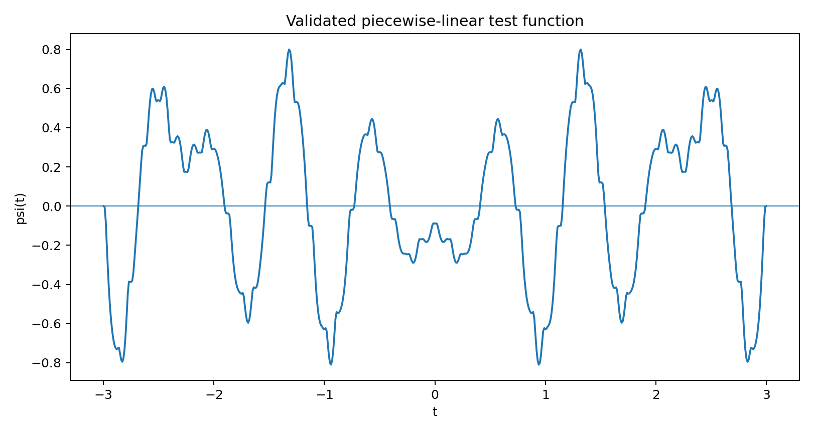
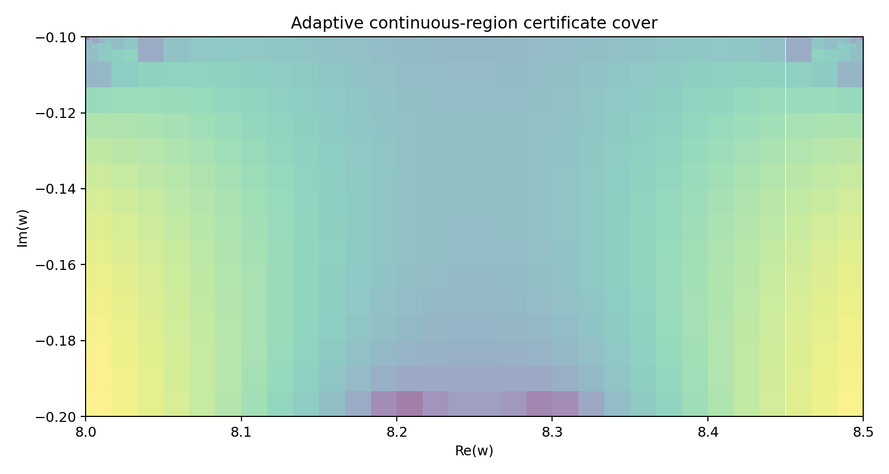
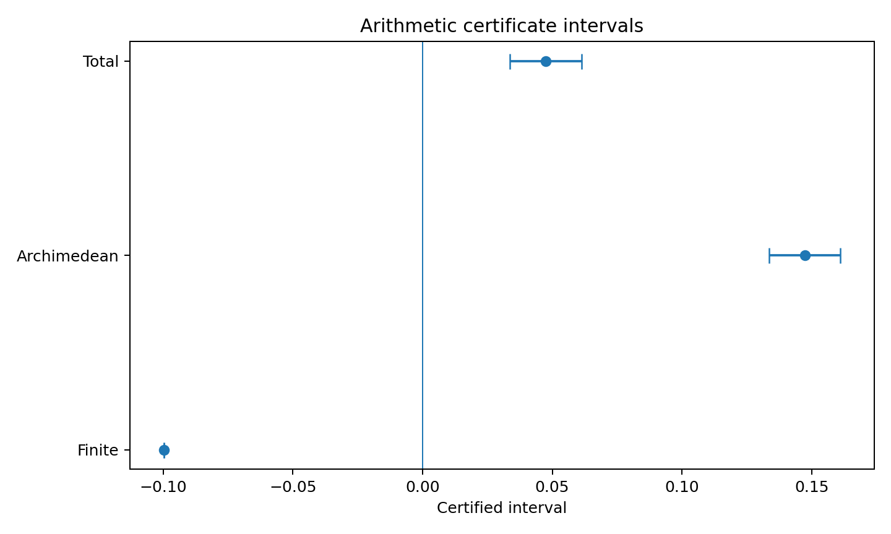

Validated Separation–Positivity Intersection Certificate v0.2 — 把 v0.1 的浮點候選重建為明確分段線性函數,對區域負方向跟算術正性分別建立區間證書,480 個子矩形全數認證、0 個未決。
certificate_summary.txt 自報 certificate_passed=True,CERTIFICATE_SCHEMA.md 定義的 scope_warning 欄位明講非 RH 狀態,原樣照登。這是可重播的 validated-numerics 證書,不是核驗過的形式化證明,不證明也不反駁黎曼猜想。
本包技術說明開頭就自報接續哪一版、修正了什麼漏洞,原樣照引。
「v0.1 已找到同一組浮點係數……但這仍有兩個漏洞:1. 網格負值不能推出矩形連續區域處處為負;2. 浮點正值不能直接視為嚴格算術下界。v0.2 不再沿用黑箱陣列,而將候選重建為明確的分段線性函數,再對兩個符號分別建立區間證書。」— 摘自本包技術說明 §1。
載入中…
載入中…
載入中…
包內 outputs/ 的三張圖,原樣照登,無後製。



原始節點數據(corrected_nodes.csv、certified_region_cells.csv)跟完整 certificate.json 沒有逐一列出,都在完整 zip 裡。
載入中…
sha256 b935b9c1d69d7b4aa5219304920729a2f53cebb46022d429093d9d7285de4e8f